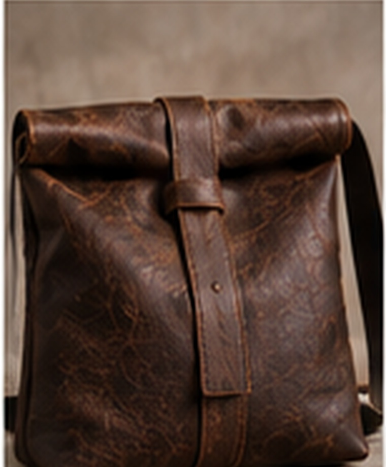
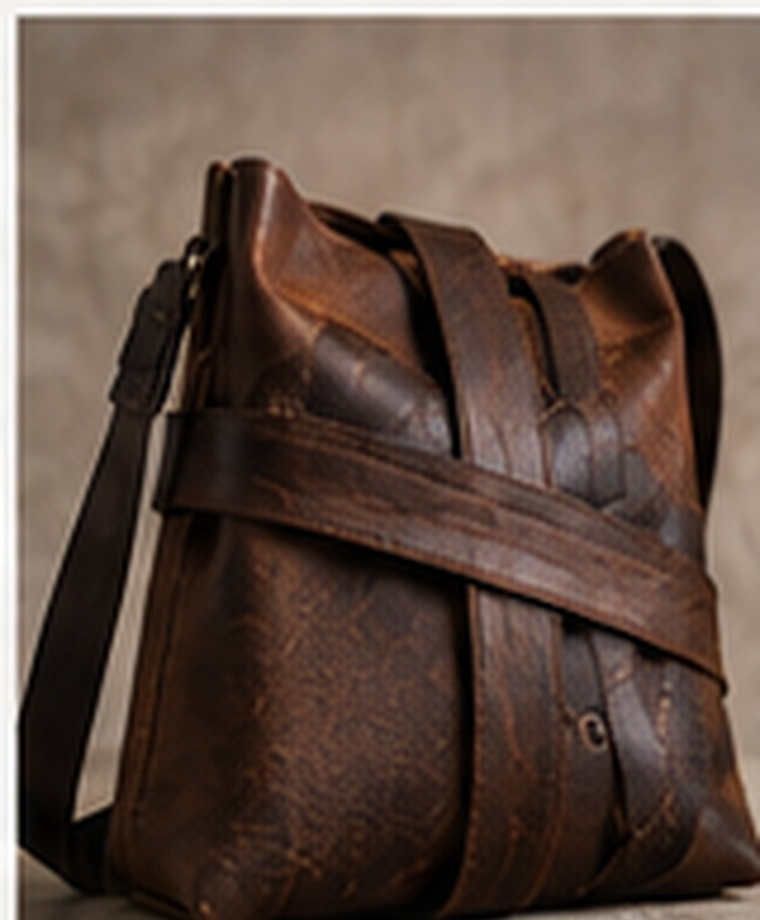
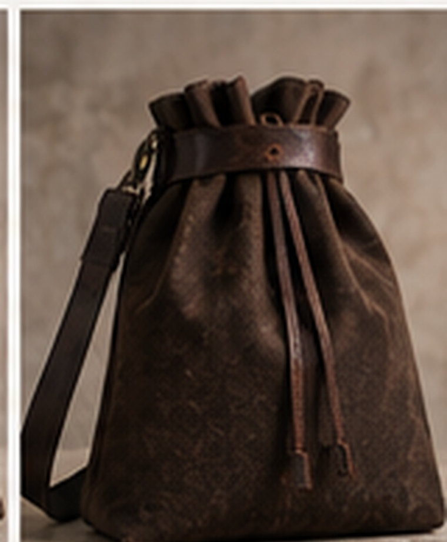
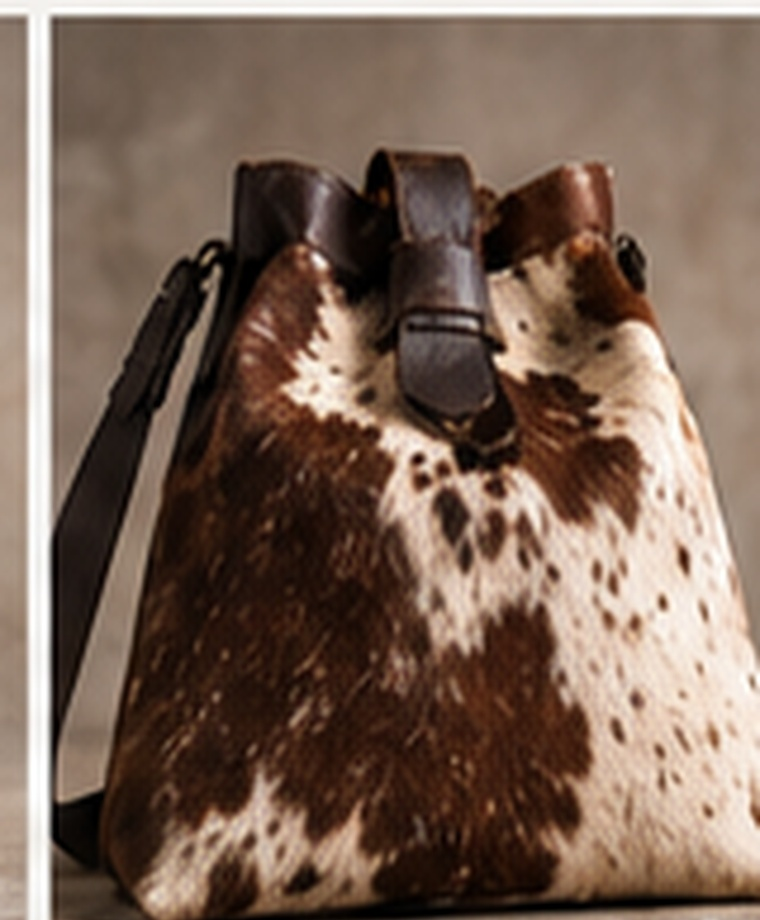
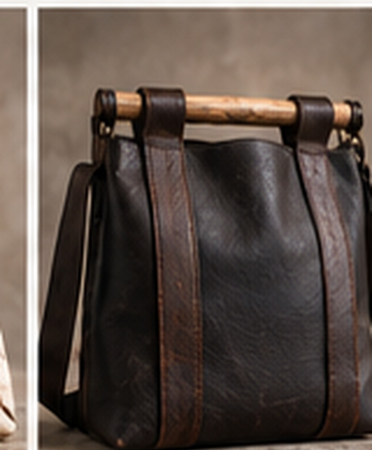
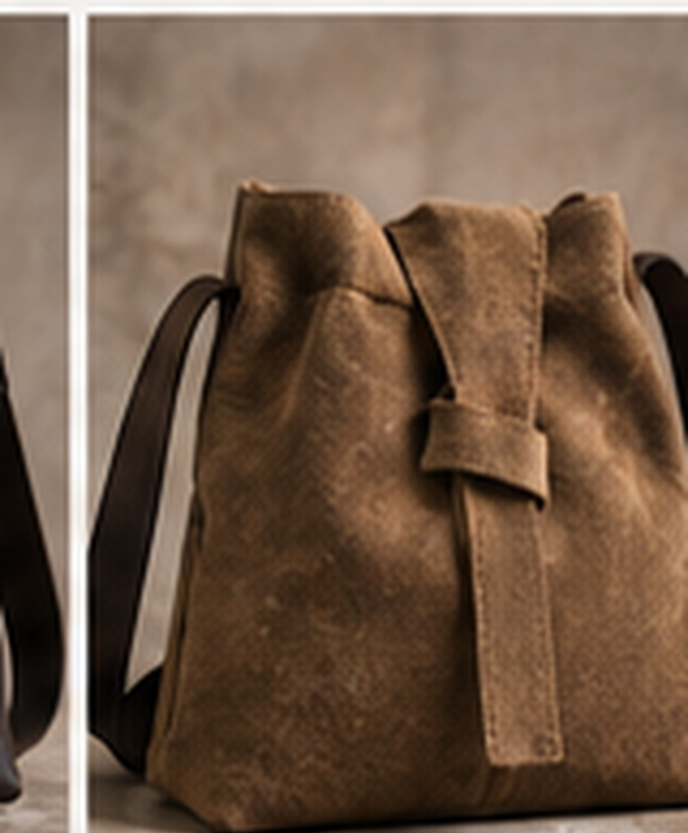
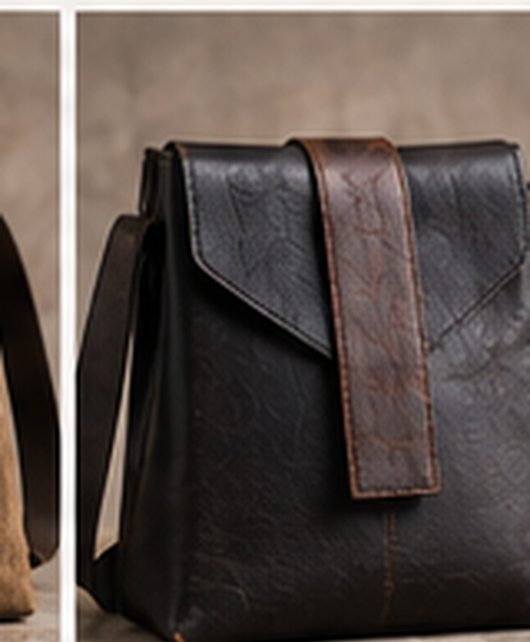
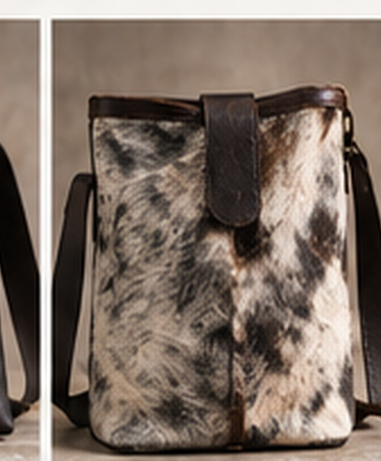

Design 01
The Rolltop
Full-grain leather rolltop
Distinctive, zipper-free carriers in leather, suede, and natural hide — sized for tallis, siddur, tefillin, and the essentials you bring to shul.

Full-grain leather rolltop

Layered leather wrap

Cinch-band leather sack

Natural hide satchel

Leather with wood-bar closure

Soft suede knot closure

Single broad leather flap

Natural hide with strap loop